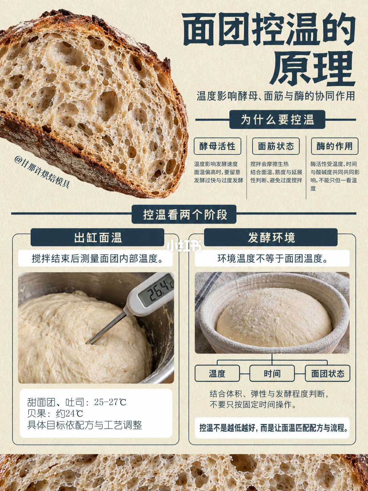
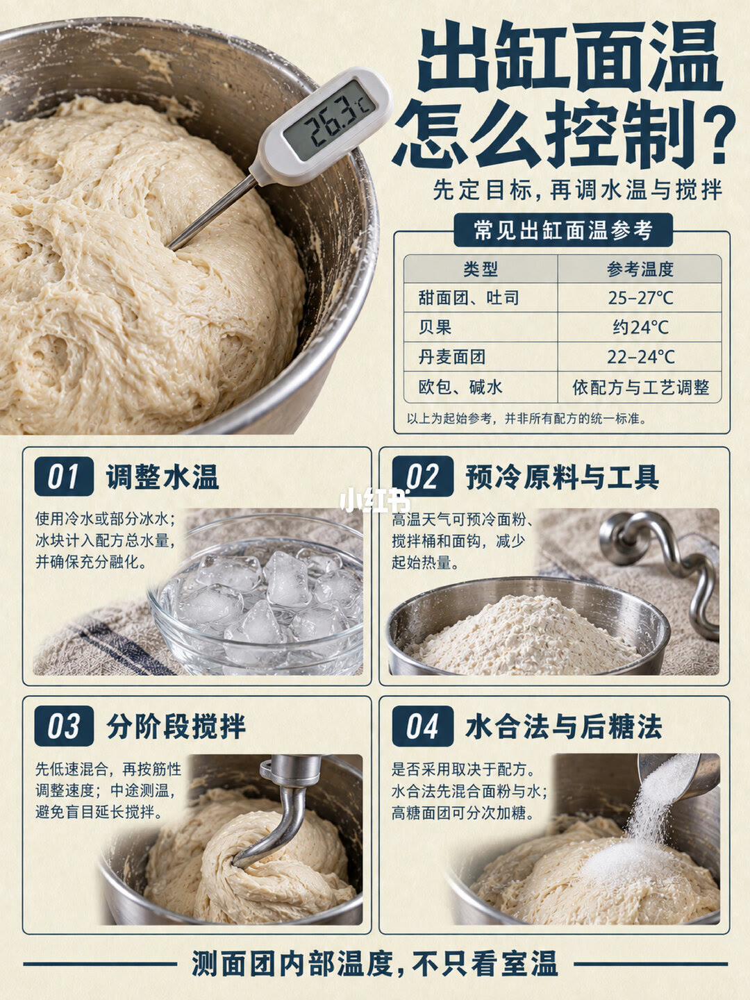
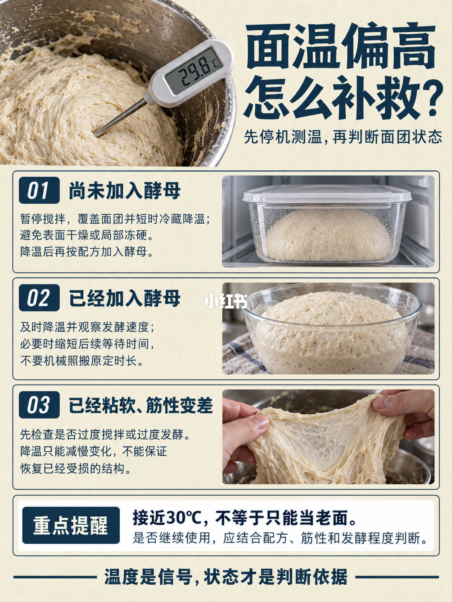
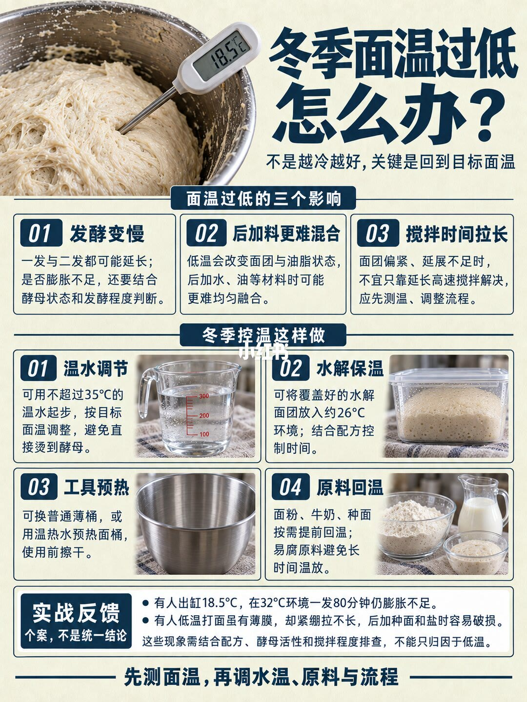

图文实录 · 小红书 · 甘那许烘焙模具
为什么要一直反复测量面团温度
面温是信号，不是成绩。出缸先量内部，发酵看体积和弹性，偏高或偏低都先停下来再改流程。
1/4
控温不是越低越好
标题「面团控温的原理」。温度同时影响酵母、面筋和酶。酵母决定发酵快慢，太高要防发酵过猛。搅拌会摩擦生热，面温和筋性、延展要一起看，避免揉过头。酶还受时间和酸碱影响，不能只看温度。
出缸面温要在搅拌结束立刻量内部。图上探针是 26.4°C。参考：甜面团和吐司 25–27°C，贝果约 24°C，并写明要按配方改。发酵环境不等于面温。温度、时间和面团状态绑在一起，用体积、弹性和发酵程度判断，不要死守钟点。页底：控温不是越低越好，是让面温匹配配方和流程。

2/4
先定目标，再调水和搅拌
标题「出缸面温怎么控制」。大图探针 26.3°C。参考表：甜面团和吐司 25–27°C，贝果约 24°C，丹麦 22–24°C，欧包和碱水按配方和流程调整。表下写这些只是起点，不是所有配方的统一标准。
四步：调水温，可以用冷水或一部分冰水，冰块算进总液体，并且要化完；天热时面粉、缸和钩子先预冷；先低速，中途量一次，避免过度搅拌；水合是先粉和水，高糖面团的糖分次加，是否使用看配方。页脚：量面团内部，不要只看室温。

3/4
偏高先停机
标题「面温偏高怎么补救」，探针 29.8°C。先停机测温，再看状态。酵母还没加：盖上短时间冷藏，避免表面干或局部结冰，凉了再按配方加酵母。酵母已经加了：尽快降温，看发酵速度，必要时缩短后面的等待，不要照原时间。已经粘软、筋性变差：先查是不是搅拌过度或发酵过度；降温只能减慢继续变坏，不能保证已经坏掉的结构恢复。接近 30°C 不等于只能当老面，要不要继续做主面团，看配方、筋力和当前发酵程度。页脚：温度是信号，状态才是判断依据。

4/4
冬天过低也要回到目标
标题「冬季面温过低怎么办」，探针 18.5°C。副题：不是越冷越好，关键是回到目标面温。三个影响：发酵变慢，一发二发都可能拉长；后加的水、油更难拌匀；搅拌时间变长时，不要只靠拉长高速，先量温度再改流程。
冬天四步：水温先不超过 35°C，按目标面温调，避免烫酵母；水合面团盖着放在大约 26°C 的环境，时间跟配方；换薄壁容器，或用热水预热搅拌缸，用前擦干；面粉、牛奶和种先回温，易坏的原料不要放太久。
实战写明是个例，不是通则。出缸 18.5°C 的面团，在 32°C 环境放 80 分钟仍然膨胀不足。低温搅拌能拉出薄膜，但面团紧、不延展，后加种和盐容易撕开。页上说这些问题要按配方、酵母活力和搅拌程度排查，不能全怪低温。收束：先测面温，再调水温、原料和流程。

汇总
先量内部，再决定动水还是动时间
第 1、2 页给出缸参考：甜面团和吐司 25–27°C，贝果约 24°C，丹麦 22–24°C，并声明不是统一标准。第 3 页用 29.8°C 分三种补救，接近 30°C 不等于报废。第 4 页用 18.5°C 说明过低会拖发酵，水温先不超过 35°C。80 分钟仍不胀是个例。没有给出每种面包的完整配方。